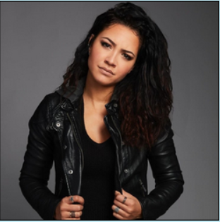

Bonjour, je m'appelle Mariama Thiam.
J'ai presque 20 ans.
Je suis étudiante en première année de licence en data science et intelligence artificielle.
Je fais partie d'une très grande famille.
J'ai deux frères, dont un jumeau, et une sœur.
Pendant mon temps libre, j'aime bien regarder des séries, surtout des séries de type policier, enquête ou médicales.
Je ne sais pas encore dans quel domaine précis je veux travailler, mais j'aime beaucoup l'informatique, même si ce n'est pas toujours évident.
